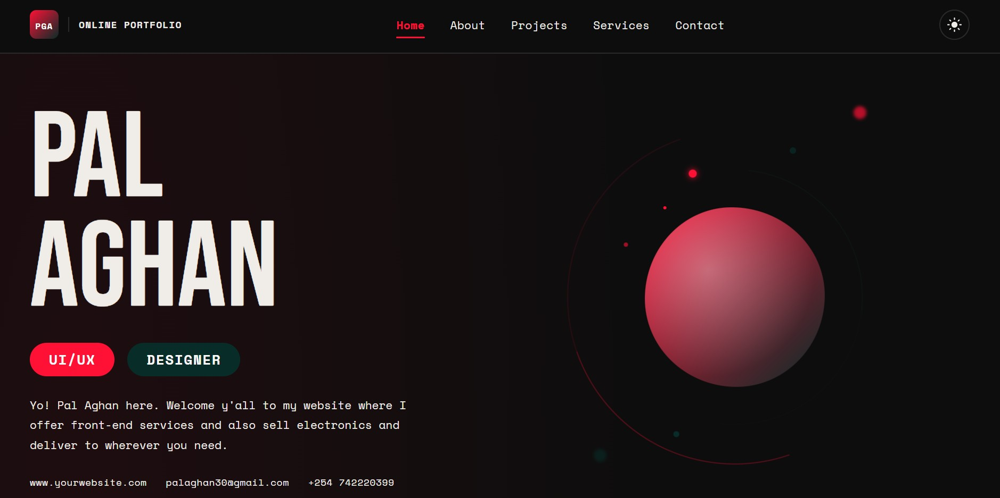

PortfolioAdd screenshot'" /> Live 01Personal Portfolio
My very first web project — this portfolio. Built from scratch using semantic HTML, custom CSS with animations, and vanilla JavaScript. Fully responsive across all screen sizes.
Things I've built, designed, and shipped. Starting with one — more on the way.

PortfolioAdd screenshot'" /> Live 01My very first web project — this portfolio. Built from scratch using semantic HTML, custom CSS with animations, and vanilla JavaScript. Fully responsive across all screen sizes.
Something is cooking. This card will be filled with a real project as the journey continues.
More work on the way. Every project teaches something new — this space will be earned.
I'm available for freelance work and collaborations. Let's build something together.
Start a Conversation ↗